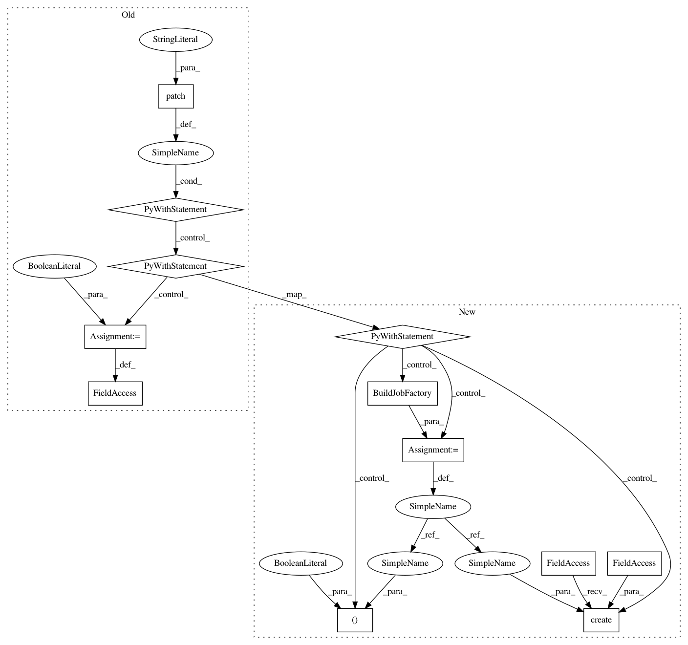

ec40e2d0dda2ffda88f553f06c2ce1362e6fc77b,tests/test_jobs/test_models.py,TestJobModel,test_job_creation_with_already_built_triggers_scheduling,#TestJobModel#,87
Before Change
assert list(JobStatus.objects.filter(job=job).values_list(
"status", flat=True)) == [JobLifeCycle.CREATED]
with patch("scheduler.dockerizer_scheduler.start_dockerizer") as mock_start:
with patch("scheduler.dockerizer_scheduler.check_image") as mock_check:
mock_start.return_value = False
mock_check.return_value = True
jobs_build(job_id=job.id)
assert mock_start.call_count == 0
assert mock_check.call_count == 1
assert JobStatus.objects.filter(job=job).count() == 2
assert list(JobStatus.objects.filter(job=job).values_list(
After Change
assert list(JobStatus.objects.filter(job=job).values_list(
"status", flat=True)) == [JobLifeCycle.CREATED]
with patch("scheduler.dockerizer_scheduler.create_build_job") as mock_start:
build = BuildJobFactory()
BuildJobStatus.objects.create(status=JobLifeCycle.SUCCEEDED, job=build)
mock_start.return_value = build, True, True
jobs_build(job_id=job.id)
assert mock_start.call_count == 1
assert JobStatus.objects.filter(job=job).count() == 2
assert list(JobStatus.objects.filter(job=job).values_list(
"status", flat=True)) == [JobLifeCycle.CREATED,
In pattern: SUPERPATTERN
Frequency: 3
Non-data size: 12
Instances
Project Name: polyaxon/polyaxon
Commit Name: ec40e2d0dda2ffda88f553f06c2ce1362e6fc77b
Time: 2019-02-10
Author: mouradmourafiq@gmail.com
File Name: tests/test_jobs/test_models.py
Class Name: TestJobModel
Method Name: test_job_creation_with_already_built_triggers_scheduling
Project Name: polyaxon/polyaxon
Commit Name: ec40e2d0dda2ffda88f553f06c2ce1362e6fc77b
Time: 2019-02-10
Author: mouradmourafiq@gmail.com
File Name: tests/test_jobs/test_models.py
Class Name: TestJobModel
Method Name: test_create_job_with_valid_spec
Project Name: polyaxon/polyaxon
Commit Name: ec40e2d0dda2ffda88f553f06c2ce1362e6fc77b
Time: 2019-02-10
Author: mouradmourafiq@gmail.com
File Name: tests/test_jobs/test_models.py
Class Name: TestJobModel
Method Name: test_create_job_with_resources_spec